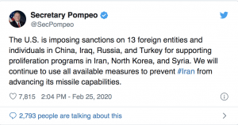
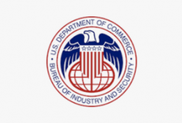

US Imposes Additional Sanctions – How Does It Affect Russia’s Weapons Industry?
The United States imposes sanctions on 13 foreign entities and individuals in Russia, China, Iraq, and Turkey under the Iran, North Korea, and Syria Nonproliferation Act (INKSNA).The announcement was confirmed by US Secretary of State Mike Pompeo on @twitter.
The Iran, North Korea, and Syria Nonproliferation Act authorizes the United States to impose sanctions against foreign individuals, private entities, and governments that engage in proliferation activities.
The Bureau of International Security and Nonproliferation, with interagency support, is responsible for leading efforts to implement the INKSNA, which provides for penalties on entities and individuals for the transfer to or acquisition from Iran since Jan.1, 1999, the transfer to or the acquisition from Syria since Jan.1, 2005, or the transfer to or acquisition from North Korea since Jan.1, 2006, of equipment and technology controlled under multilateral control lists (Missile Technology Control Regime, Australia Group, Chemical Weapons Convention, Nuclear Suppliers Group, Wassenaar Arrangement).INKSNA also provides for sanctions for the transfer of equipment or technology having the potential to make a material contribution to the development of weapons of mass destruction or cruise or ballistic missile systems.This category includes:
(a) Items of the same kind as those on multilateral lists, but falling below the control list parameters, when it is determined that such items have the potential to make a material contribution to WMD or cruise or ballistic missile systems;
(b) other items with potential to make such a material contribution, when added through case-by-case decisions; and
(c) items on U.S. national control lists for WMD/missile reasons that are not on multilateral lists.
This action includes new sanctions against:
Kumertau Aviation Production Enterprise (Russia) and any successor, sub-unit, or subsidiary thereof.
The Kumertau Aviation Production Enterprise (KUMAPE) located in the Republic of Bashkortostan of the Russian Federation, has been manufacturing helicopters, aircraft and related equipment since 1962.The company is widely known as the major manufacturer of helicopters developed by Kamov; the larger Kamov K-32 helicopter.According to a Decree issued by the Russian Government, KUMAPE has been chosen to launch serial production of the IL-112, a new airliner developed by G.N. Novozhilov – a project has required considerable reorganization and expansion of the company’s production facilities.The new assembly facilities for the IL-112 have been completed recently and the project is being realized in cooperation with a number of design, production and other organizations in Russia (including the Republic of Bashkortostan.
One of the recent projects is Ка-226Т helicopter modernization with the ВК-650В, engine.The Kamov Ka-226 is a small, twin-engine Russian utility helicopter.The Ka-226 features an interchangeable mission pod, rather than a conventional cabin, allowing the use of various accommodation or equipment configurations.
Instrument Building Design Bureau (KBP) Tula (Russia) and any successor, sub-unit, or subsidiary thereof.
KBP was founded on 1 October, 1927 as an organization at Tula Weapons Factory, engaging in designing small arms.The first major success the organization made was in the Red Armory, where its Tokarev pistol was adopted into use in February 1931.
It carries out the development of weapon systems along the following lines:
Scientific Production Association Mashinostroyeniya (NPOM) (Russia) and any successor, sub-unit, or subsidiary thereof.It was formed in October 2001.Integration of the new holding company is due to be completed in early 2005.The 11 enterprises had previously been engaged in co-operative production as part of two defence structures, seven in Rosaviakosmos (the Russian Aerospace Agency) and four in Rossudostroyeniye (the Russian Shipbuilding Agency).The four enterprises coming from the Shipbuilding Agency – which was disbanded in March 2004 – are all part of the Granit-Elektron concern and will stay together as a sub-holding company in the new holding company, consisting of the Petersburg TsNII (Central Scientific Research Institute) Granit, the Ravenstvo PO (Production Association), the Severnyy Press enterprise and the Kulakov Plant.Other enterprises will include the Orenburg PO, where Ka-225 helicopters are assembled.
Baoding Shimaotong Enterprises Services Company Limited (China) and any successor, sub-unit, or subsidiary thereof.They are an export/import company.
Dandong Zhensheng Trade Co., Ltd.(China) and any successor, sub-unit, or subsidiary thereof.
Gaobeidian Kaituo Precise Instrument Co. Ltd (China) and any successor, sub-unit, or subsidiary thereof.
Luo Dingwen (Chinese individual); Luo Dingwen was also involved in the supply of sensitive items for Pakistan’s weapons program.
Shenzhen Tojoin Communications Technology Co. Ltd (China) and any successor, sub-unit, or subsidiary thereof.
Shenzhen Xiangu High-Tech Co., Ltd (China) and any successor, sub-unit, or subsidiary thereof.
Wong Myong Son (individual in China).
Wuhan Sanjiang Import and Export Co., Ltd (China) and any successor, sub-unit, or subsidiary thereof.
Kata’ib Sayyid al-Shuhada (KSS) (Iraq) and any successor, sub-unit, or subsidiary thereof.
Eren Carbon Graphite Industrial Trading Company, Ltd.(Turkey) and any successor, sub-unit, or subsidiary thereof.
'Recent definitions were the result of a periodic review of authorized activities in accordance with INKSNA requirements.We have imposed two-year discretionary sanctions on 13 individuals / organizations identified in this report.The sanctions include restrictions on U.S. government purchases, U.S. government assistance, and exports.
The introduction of these measures underscores that Iran’s missile program remains a serious proliferation problem.The imposition of sanctions against these foreign organizations is consistent with our efforts to use all available measures to prevent Iran from increasing its missile capabilities.'
The United States has imposed additional restrictions on shipments to Russia of sensitive goods and technologies that fall under the criteria of 'nuclear', 'chemical and biological', as well as 'missile', according to the American export control Rules (EAR, Export Administration Regulations).
The information became available from the US Bureau of Industry and Security, an agency of the United States Department of Commerce that deals with issues involving national security and high technology.A principal goal for the bureau is helping stop proliferation of weapons of mass destruction, while furthering the growth of United States exports.The restrictions came into effect on February 24, 2020.
The Russian embassy in Washington DC claims it is more Russophobia and Russia will continue with their projects.The Kremlin stated the planned projects and sales will continue with the countries of their choosing.
[bsa_pro_ad_space id=4]
Share on Facebook Tweet Follow us
Major League Soccer kicks off its 25th anniversary season this weekend, with a full slate of eight games Saturday and another five on Sunday.Two new teams will be making their MLS debut, bringing the total number of teams to 26.Nashville FC will host league juggernaut Atlanta United Saturday, while Inter Miami visits 2020 MLS Cup favorites, Los Angeles FC Sunday.
LAFC (+340) are coming off their first Supporters’ Shield, having set league records for points and goal differential last year.They are heavy favorites— particularly in the Western Conference— to avenge a shocking defeat in the Western Conference Finals, and capture their first MLS Cup title.That loss came at the hands of the Seattle Sounders (+1100), who won their second MLS Cup in four years.Both squads, however, might get bogged down in early CONCACAF Champions League action.
In the Eastern Conference, last year’s MLS Cup runners-up, Toronto FC, and 2018 MLS Cup champion, Atlanta United, are co-favorites (+750).The Five Stripes engaged in a frenzy of wheeling and dealing this offseason, giving manager Frank de Boer a real challenge in Atlanta.By contrast, the Reds largely stood pat.This might give them a slight edge, should the two squads renew their acquaintances, after last year’s Eastern Conference Finals.
The league’s newcomer to watch is none other than Javier 'Chicharito' Hernandez, arriving on a $9.4 million transfer fee from Spanish side Sevilla.He, essentially, replaces another high-profile import, the incomparable Zlatan Ibrahimovic, at LA Galaxy (+1800).The Mexican national, and El Tri superstar, is already being hailed as one of the most significant player acquisitions in the league’s 25-year history.Why?'Five or 10 years ago, Chicharito would’ve come back to Chivas at age 31,' MLS analyst Matthew Doyle told The Salt Lake Tribune.'Now instead he comes to the Galaxy.This is progress.'
Inter Miami (+3400) and Nashville FC (+12000) are hoping to avoid the fate endured by last season’s debutant, FC Cincinnati (+10000), dead last in truly historic fashion.Cincinnati finished with fewer goals than games, and conceded a league record 75, for a ghastly -44 goal differential by season’s end.
David Beckham is finally able to cash in a 13-year promise, which allowed him the option to own an expansion team at a discounted rate once he signed with the Galaxy.Becks has already been rumored to lure in plenty of star power.Nashville’s goals, by contrast, are simple.As midfielder Dax McCarty put it, 'we can’t try to emulate LAFC.We can’t try to emulate Atlanta United.We don’t want to emulate Cincinnati.'
The league’s ever-expanding roster means 2020 will be the first season in league history where every team will not play every other team at least once.If 26 teams weren’t enough, even more are on the way.Charlotte and Austin join the party next season, while Sacramento and St.Louis bring the league to 30 by 2022.
Americans’ appetite for soccer doesn’t seem to be diminishing either, and the league wants you to know that games are easier than ever to watch in the United States, Canada, and some 190 countries and territories worldwide.MLS is also arguably the most cord-cutter friendly of America’s major professional leagues.Several teams have exclusive deals with streaming partners, like YouTube TV, to provide in-market broadcasts of matches.Condensed games, as well as full-match replays, are also available streaming for free, which is nearly unheard of across other leagues.
[bsa_pro_ad_space id=4]
Posted On: 2020-02-27T00:00:00
Posted By: Christina Kitova





Content Date: 2020-02-27
Download Date: 2021-07-09
Document ID: L0C04EL76